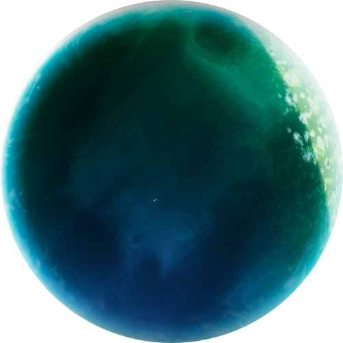

- - Petrichor V
- Após a sabotagem de uma de suas naves, a humanidade envia uma nova tripulação para explorar o planeta e buscar respostas.
- Petrichor V é um mundo diversificado, com uma grande variedade de ambientes que incluem desertos, tundras, selvas de fungos e ilhas flutuando livremente no céu. Além dessas áreas, o planeta também possui uma grande variedade de reinos sobrenaturais.
- Nesse planeta é onde o jogador passará a maior parte do tempo enquanto joga Risk of Rain 2.
- • Poleiro Longínquo
- Uma região montanhosa desolada e sombria localizada em Petrichor V.
Pináculos de terra projetam-se através da neblina e criaturas aviárias desconhecidas
circundam picos distantes protegendo suas ninhadas.
Os diferentes níveis de terreno dificultam a mobilidade trazendo mais desafios ao jogador e o risco de grandes quedas. - • Planícies Titânicas
- Um vasto planalto fraturado localizado em Petrichor V. Gigantescos arcos de pedra circundam
o horizonte, enquanto o campo principal tem vista para uma vasta planície tectônica
fraturada.
A presença de trincheiras e corredores acumulam inimigos podendo encurralar o jogador, a menos que ele seja habilidoso o suficiente para evitar esses cenários. - • Floresta Sinfonada
- A região mais fria de Petrichor V. Coberto por uma camada de neve, com grandes árvores
cercadas por plataformas que abrangem vários níveis e longos rios congelados, onde os
personagens deslizarão pela superfície.
Floresta sinfonada trás um estilo de jogo diferenciado com seu sistema de cavernas e montanhas trazendo vantagens a sobreviventes com alta mobilidade. - • Cataratas Verdejantes
- Uma beleza natural encontrada em Petrichor V. Constituido de plataformas com diferentes e
elevações e vários corredores, cataratas vertejantes é a mais recente adição ao jogo.
Contando com diversas paisagens e quedas d'água além de uma paleta de cores completamente
diferente do habitual.
Sobreviventes rápidos e com bastante mobilidade se dão muito bem no terreno irregular encontrado nas redondezas.
Primeiro estágio
- • Aqueduto Abandonado
- Um deserto árido e extenso localizado em Petrichor V. Enormes esqueletos e poças de alcatrão
estão espalhados, e um imponente aqueduto derramando alcatrão domina a área.
Por entre as pedras se escondem antigos segredos, seria alguém capaz de desvenda-los? - • Faceta do Pântano
- Um lamaçal úmido encontrado em Petrichor V. Consiste principalmente em estruturas de pedra em ruínas e áreas pantanosas cheias de água. Apresenta uma falésia elevada, que pode ou não ser acessível.
- • Santuário Apoastro
- Um sagrado espaço espiritual encontrado em Petrichor V. Suas pontes características permitem
acesso a todas as suas plataformas e torres encontradas logo acima de um precipício.
Sobreviventes com alta mobilidade aérea jogam de forma mais confortável, já que as grandes alturas geralmente não são um problema.
Segundo estágio
- • Ponto de Encontro Delta
- Uma tundra desolada localizada em Petrichor V. Containers e instalações elétricas espalhadas pelo terreno levam a crer que alguém trabalhasse ou até vivesse no local, quem quer que seja não esta mais ali, seria por conta dos monstros? Ou pior... por conta do frio?!
- • Acres Abrasados
- Um cenário místico e desolado encontrado em Petrichor V. Grandes plataformas circulares
constituem a maior parte do espaço e brasas flutuam no ar.
Suas arvores de coloração avermelhada trazem um ar de outono junto da calmaria dos ventos. - • Fontes de Enxofre
- Um local perigoso por si só e inesplorado de Petrichor V. Composto por lagos escalonados de
piscinas rasas de enxofre. Pontes em arco e cavernas subterrâneas conectam o mapa.
Na distância é possível observar montanhas cheias de aberturas expelindo seus gases tóxicos.
Terceiro estágio

- • Profundezas Abissais
- Localizado na crosta de Petrichor V. Uma zona de calor escaldante forjada pelo fogo do inferno. O mapa apresenta duas portas que conduzem a uma caverna, que podem ser fechadas ou abertas, se abertas, a caverna guarda várias caixas de itens que poderão ser desfrutadas pelos jogadores.
- • Canto da Sereia
- Um ambiente humido e chuvoso encontrado em Petrichor V. Repleto de túneis e cavernas é lar de diversas aves. Ao longo do mapa é possível encontrar ninhos de ovos, mas cuidado, quem quer que seja a dona, ela provavelmente não se da bem com intrusos.
- • Bosque Despedaçado
- O Sundered Grove é um palco de selva denso e floral localizado em Petrichor V. Explore o novo pântano, onde a flora antiga surgiu para recuperar este refúgio outrora sagrado. Labirintos de raízes e fungos crescidos distorceram a paisagem, deixando apenas ruínas.
Quarto estágio
- • Campina Celeste
- O último e mais perigoso lugar do planeta, localizado na atmosfera superior de Petrichor V. O teletransportador neste ambiente é uma versão única chamada Teletransportador Primordial, que possui anéis externos com os quais você pode interagir antes de iniciar o Evento do Teletransportador para se alinhar com a lua para acessar O inicio ou para alinhar com o planeta para continuar o ciclo de estágios em Petrichor V mantendo todo seu progresso.
- • O Início
- O último estágio do jogo. Grande domínio localizado acima da brecha quebrada da lua de
Petrichor V. É composto pelos restos destroçados de quatro secções emblemáticas
de Mithrix
e as ferramentas de criação da Providência.
Um lugar mais complexo do que parece. Conseguiriam os sobreviventes encontrar oque buscam?